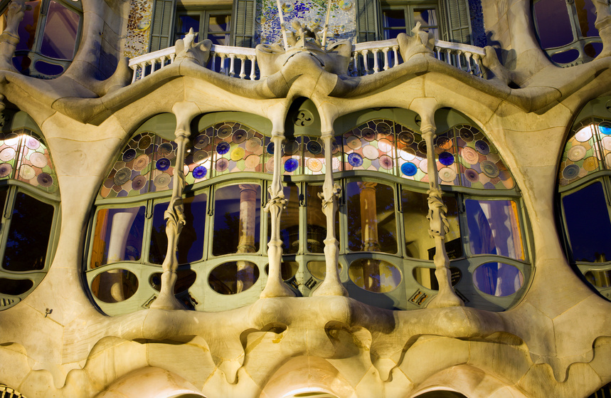

Regatul Spaniei (spaniolă Reino de España) sau Spania (spaniolă España) este o țară situată în sud-vestul Europei, membră a Uniunii Europene. În nord-est se învecinează cu Franța și Andora de-a lungul Munților Pirinei. Face parte din Peninsula Iberică împreună cu Portugalia și Gibraltar, având de asemenea două arhipelaguri, situate unul în Marea Mediterană (Insulele Baleare) și celălalt în Oceanul Atlantic (Insulele Canare). De asemenea, de Spania aparțin două mici teritorii din nordul Africii (care includ orașele autonome Ceuta și Melilla), precum și enclava Llivia din Pirinei.
După sfârșitul regimului Franco în 1975, Spania a devenit o monarhie și o monarhie constituțională în 1978 când o nouă constituție a fost adoptată.
Numele „Spania” este derivat din „Hispania”, numele în latină cu care romanii se refereau la toată peninsula, și pe care l-au preluat din grecul „Hispanía” (accent pe „i”, ca și în cazul „României”), utilizat de către Artemidor din Efes (sec.I î.Hr.), autorul celei mai vechi hărți a Occidentului, în care descrie amănunțit Hispania romană.
Originea termenului „Hispania” este atribuit fenicienilor, prima civilizație non-iberică, care a ajuns în peninsulă pentru a-și extinde comerțul și care a fondat, între altele, orașul activ cel mai vechi din Occident. În limba lor punică l-au numit Isephanim, „Coastă de iepuri”. Iepurii se găseau și încă se găsesc în abundență în Andaluzia, iar unele monede bătute în epoca lui Hadrian reprezentau personificarea Hispaniei ca o doamnă așezată, cu un iepure la picioarele ei.